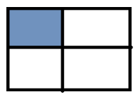
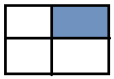
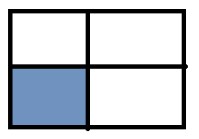
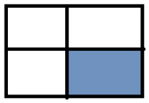

Task №1
Знайти суми елементів у вказаній області (масиви розділені на 4 рівні частини)
- 1. 
- 2. 
- 3. 
- 4. 
- 5. Суму парних рядків
- 6. Суму непарних стовпців
- 7. У парних рядках – непарні стовпці, у непарних – парні
Task №2
Дано інформацію про прибуток К магазинів протягом тижня. Знайти:
- 1. загальний прибуток кожного магазину за тиждень;
- 2. загальний прибуток усіх магазинів по дням (загальний прибуток усіх магазинів за понеділок, за вівторок, і т.д.);
- 3. загальний прибуток за робочі дні
- 4. загальний прибуток за вихідні дні
- 5. сформувати загальний список (одновимірний масив) зі значенням, які більші за 200
- 6. відсортувати кожен тиждень за зростанням
- 7. упорядкувати тижні (рядки) за спаданням суми елементів у рядку (тобто при порівнянні двох рядків треба знайти суму кожного з рядків і порівнювати ці суми, на основі цих сум буде зрозуміло, який з елементів повинен іти раніше).
- 8. відсортувати тижні (рядки) за спаданням максимального елементи у цьому тижні (рядку), тобто при порівнянні рядків потрібно порівнювати максимальні елементи у кожному з цих рядків